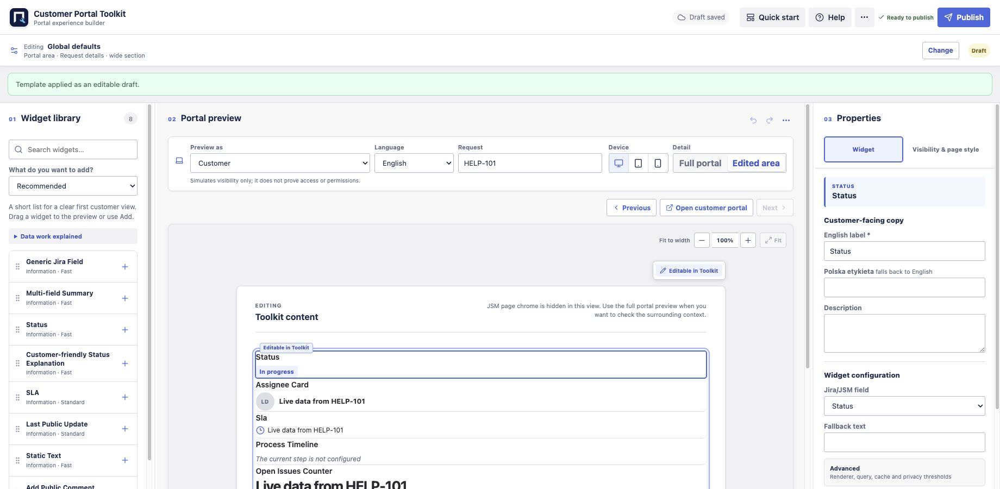

Customer portal composition for Jira Service Management Cloud
Put clearer request context and safe actions where customers need them
Customer Portal Toolkit helps JSM administrators compose customer-friendly portal panels from supported Jira data, privacy-treated service metrics and permission-checked actions. It runs on Atlassian Forge without a vendor-hosted backend or external app database.
The public Marketplace listing is being prepared. Evaluation access is coordinated through Mederak Apps Service Desk.
JSM CloudAtlassian ForgeNo remote backendPrivacy-treated metricsPermission-checked actionsOptional AI

Trust center
Public answers for administrators and security reviewers
These pages describe the exact 1.0 data, security, support and lifecycle boundaries used for Marketplace review.
P
PrivacyData categories, purposes, roles, retention and privacy request process. Read the Privacy Policy.
S
SecurityForge architecture, scopes, authorization, logging and vulnerability handling. Review Security Practices.
D
Data processingProcessing roles, subprocessors, residency and uninstall behavior. Open the data summary.
AI
AI transparencyOptional Forge LLM controls, input limits, cache and human-review requirements. Review AI transparency.
Designed for controlled administration
Draft, preview and publish at the right scope
Administrators can maintain global, project and request-type configuration, preview supported audiences and devices, and publish validated versions. The backend derives tenant, actor, project, request and license context from Forge rather than trusting frontend authority claims.
- Declarative widgets and allowlisted configuration—no custom JavaScript, HTML, CSS or arbitrary endpoints.
- Current-request data follows Jira/JSM permissions.
- Aggregate paths are project-bound and disclose only privacy-treated results.
- Anonymous output is limited to explicitly public, configuration-backed portal-header content.